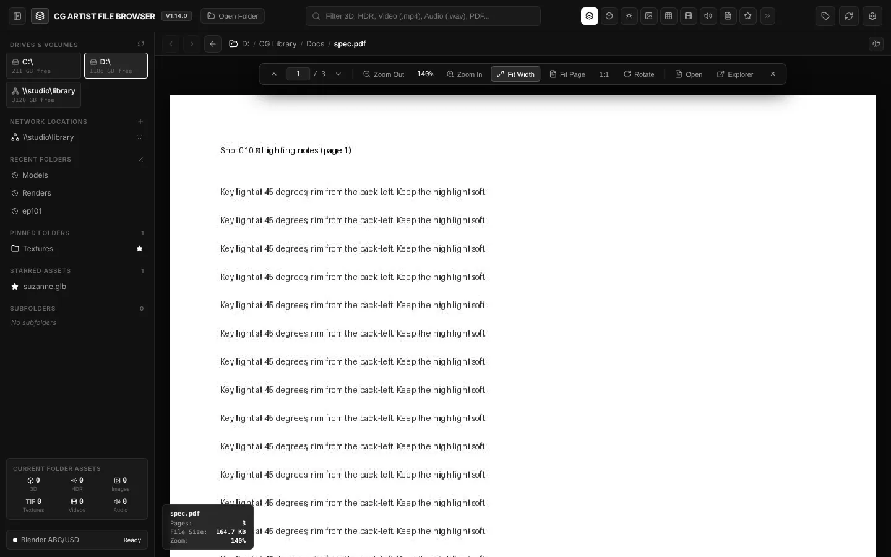

Deep dive
PDF documents
The PDF viewer: first-page thumbnails, continuous scrolling, zoom and fit modes, rotation and keys.
Opening a PDF
PDF files show their first page as the thumbnail. Open one with Enter or a double-click. The viewer shows the whole document in one column that you can scroll, so you can read a brief or a shot list without a separate reader.

Moving through the pages
Page DownorSpacegoes to the next page,Page UporShift+Spaceto the previous one.HomeandEndgo to the first and last page.UpandDownscroll a little.
Zoom and fit
Ctrl+ mouse wheel, or+and-, zooms in and out.Ctrl+0fits the page width,Ffits the whole page, andCtrl+1shows the page at 100%.
Rotate and pan
R rotates the page by 90 degrees. Drag with the left mouse button to pan when the page is larger than the window.
Left and Right open the previous or next PDF in the folder.
Found a mistake or something missing? Edit this page on GitHub.